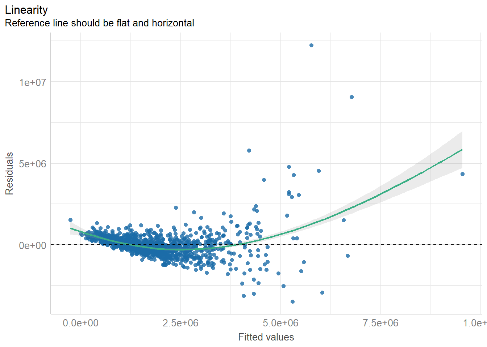
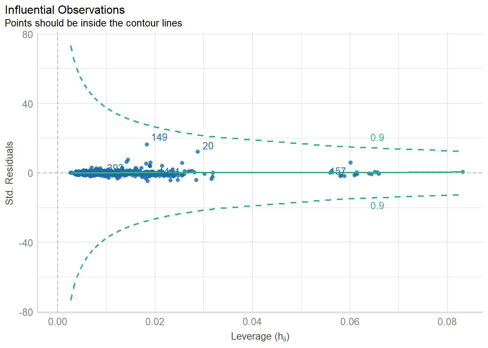

pacman::p_load(olsrr, corrplot, ggpubr, sf, spdep, GWmodel, tmap, tidyverse, gtsummary, performance)In-Class Exercise 10
Data Set-Up
mpsz = st_read(dsn = "data/geospatial", layer = "MP14_SUBZONE_WEB_PL")Reading layer `MP14_SUBZONE_WEB_PL' from data source
`C:\wamp64\www\crediblues\IS415-GAA\In-Class_Ex\In-Class_Ex10\data\geospatial'
using driver `ESRI Shapefile'
Simple feature collection with 323 features and 15 fields
Geometry type: MULTIPOLYGON
Dimension: XY
Bounding box: xmin: 2667.538 ymin: 15748.72 xmax: 56396.44 ymax: 50256.33
Projected CRS: SVY21mpsz_svy21 <- st_transform(mpsz, 3414)
st_crs(mpsz_svy21)Coordinate Reference System:
User input: EPSG:3414
wkt:
PROJCRS["SVY21 / Singapore TM",
BASEGEOGCRS["SVY21",
DATUM["SVY21",
ELLIPSOID["WGS 84",6378137,298.257223563,
LENGTHUNIT["metre",1]]],
PRIMEM["Greenwich",0,
ANGLEUNIT["degree",0.0174532925199433]],
ID["EPSG",4757]],
CONVERSION["Singapore Transverse Mercator",
METHOD["Transverse Mercator",
ID["EPSG",9807]],
PARAMETER["Latitude of natural origin",1.36666666666667,
ANGLEUNIT["degree",0.0174532925199433],
ID["EPSG",8801]],
PARAMETER["Longitude of natural origin",103.833333333333,
ANGLEUNIT["degree",0.0174532925199433],
ID["EPSG",8802]],
PARAMETER["Scale factor at natural origin",1,
SCALEUNIT["unity",1],
ID["EPSG",8805]],
PARAMETER["False easting",28001.642,
LENGTHUNIT["metre",1],
ID["EPSG",8806]],
PARAMETER["False northing",38744.572,
LENGTHUNIT["metre",1],
ID["EPSG",8807]]],
CS[Cartesian,2],
AXIS["northing (N)",north,
ORDER[1],
LENGTHUNIT["metre",1]],
AXIS["easting (E)",east,
ORDER[2],
LENGTHUNIT["metre",1]],
USAGE[
SCOPE["Cadastre, engineering survey, topographic mapping."],
AREA["Singapore - onshore and offshore."],
BBOX[1.13,103.59,1.47,104.07]],
ID["EPSG",3414]]condo_resale = read_csv("data/aspatial/Condo_resale_2015.csv")Rows: 1436 Columns: 23
── Column specification ────────────────────────────────────────────────────────
Delimiter: ","
dbl (23): LATITUDE, LONGITUDE, POSTCODE, SELLING_PRICE, AREA_SQM, AGE, PROX_...
ℹ Use `spec()` to retrieve the full column specification for this data.
ℹ Specify the column types or set `show_col_types = FALSE` to quiet this message.condo_resale.sf <- st_as_sf(condo_resale,
coords = c("LONGITUDE", "LATITUDE"),
crs=4326) %>%
st_transform(crs=3414)condo_resale.sf <- condo_resale.sf %>%
mutate(`LOG_SELLING_PRICE` = log(SELLING_PRICE))condo.mlr <- lm(formula = SELLING_PRICE ~ AREA_SQM + AGE +
PROX_CBD + PROX_CHILDCARE + PROX_ELDERLYCARE +
PROX_URA_GROWTH_AREA + PROX_HAWKER_MARKET + PROX_KINDERGARTEN +
PROX_MRT + PROX_PARK + PROX_PRIMARY_SCH +
PROX_TOP_PRIMARY_SCH + PROX_SHOPPING_MALL + PROX_SUPERMARKET +
PROX_BUS_STOP + NO_Of_UNITS + FAMILY_FRIENDLY + FREEHOLD,
data=condo_resale.sf)
summary(condo.mlr)
Call:
lm(formula = SELLING_PRICE ~ AREA_SQM + AGE + PROX_CBD + PROX_CHILDCARE +
PROX_ELDERLYCARE + PROX_URA_GROWTH_AREA + PROX_HAWKER_MARKET +
PROX_KINDERGARTEN + PROX_MRT + PROX_PARK + PROX_PRIMARY_SCH +
PROX_TOP_PRIMARY_SCH + PROX_SHOPPING_MALL + PROX_SUPERMARKET +
PROX_BUS_STOP + NO_Of_UNITS + FAMILY_FRIENDLY + FREEHOLD,
data = condo_resale.sf)
Residuals:
Min 1Q Median 3Q Max
-3475964 -293923 -23069 241043 12260381
Coefficients:
Estimate Std. Error t value Pr(>|t|)
(Intercept) 481728.40 121441.01 3.967 7.65e-05 ***
AREA_SQM 12708.32 369.59 34.385 < 2e-16 ***
AGE -24440.82 2763.16 -8.845 < 2e-16 ***
PROX_CBD -78669.78 6768.97 -11.622 < 2e-16 ***
PROX_CHILDCARE -351617.91 109467.25 -3.212 0.00135 **
PROX_ELDERLYCARE 171029.42 42110.51 4.061 5.14e-05 ***
PROX_URA_GROWTH_AREA 38474.53 12523.57 3.072 0.00217 **
PROX_HAWKER_MARKET 23746.10 29299.76 0.810 0.41782
PROX_KINDERGARTEN 147468.99 82668.87 1.784 0.07466 .
PROX_MRT -314599.68 57947.44 -5.429 6.66e-08 ***
PROX_PARK 563280.50 66551.68 8.464 < 2e-16 ***
PROX_PRIMARY_SCH 180186.08 65237.95 2.762 0.00582 **
PROX_TOP_PRIMARY_SCH 2280.04 20410.43 0.112 0.91107
PROX_SHOPPING_MALL -206604.06 42840.60 -4.823 1.57e-06 ***
PROX_SUPERMARKET -44991.80 77082.64 -0.584 0.55953
PROX_BUS_STOP 683121.35 138353.28 4.938 8.85e-07 ***
NO_Of_UNITS -231.18 89.03 -2.597 0.00951 **
FAMILY_FRIENDLY 140340.77 47020.55 2.985 0.00289 **
FREEHOLD 359913.01 49220.22 7.312 4.38e-13 ***
---
Signif. codes: 0 '***' 0.001 '**' 0.01 '*' 0.05 '.' 0.1 ' ' 1
Residual standard error: 755800 on 1417 degrees of freedom
Multiple R-squared: 0.6518, Adjusted R-squared: 0.6474
F-statistic: 147.4 on 18 and 1417 DF, p-value: < 2.2e-16condo.mlr1 <- lm(formula = SELLING_PRICE ~ AREA_SQM + AGE +
PROX_CBD + PROX_CHILDCARE + PROX_ELDERLYCARE +
PROX_URA_GROWTH_AREA + PROX_MRT + PROX_PARK +
PROX_PRIMARY_SCH + PROX_SHOPPING_MALL + PROX_BUS_STOP +
NO_Of_UNITS + FAMILY_FRIENDLY + FREEHOLD,
data=condo_resale.sf)
olssr_condo <- ols_regress(condo.mlr1)
olssr_condo Model Summary
-----------------------------------------------------------------------------
R 0.807 RMSE 751998.679
R-Squared 0.651 MSE 571471422208.591
Adj. R-Squared 0.647 Coef. Var 43.168
Pred R-Squared 0.638 AIC 42966.758
MAE 414819.628 SBC 43051.072
-----------------------------------------------------------------------------
RMSE: Root Mean Square Error
MSE: Mean Square Error
MAE: Mean Absolute Error
AIC: Akaike Information Criteria
SBC: Schwarz Bayesian Criteria
ANOVA
--------------------------------------------------------------------------------
Sum of
Squares DF Mean Square F Sig.
--------------------------------------------------------------------------------
Regression 1.512586e+15 14 1.080418e+14 189.059 0.0000
Residual 8.120609e+14 1421 571471422208.591
Total 2.324647e+15 1435
--------------------------------------------------------------------------------
Parameter Estimates
-----------------------------------------------------------------------------------------------------------------
model Beta Std. Error Std. Beta t Sig lower upper
-----------------------------------------------------------------------------------------------------------------
(Intercept) 527633.222 108183.223 4.877 0.000 315417.244 739849.200
AREA_SQM 12777.523 367.479 0.584 34.771 0.000 12056.663 13498.382
AGE -24687.739 2754.845 -0.167 -8.962 0.000 -30091.739 -19283.740
PROX_CBD -77131.323 5763.125 -0.263 -13.384 0.000 -88436.469 -65826.176
PROX_CHILDCARE -318472.751 107959.512 -0.084 -2.950 0.003 -530249.889 -106695.613
PROX_ELDERLYCARE 185575.623 39901.864 0.090 4.651 0.000 107302.737 263848.510
PROX_URA_GROWTH_AREA 39163.254 11754.829 0.060 3.332 0.001 16104.571 62221.936
PROX_MRT -294745.107 56916.367 -0.112 -5.179 0.000 -406394.234 -183095.980
PROX_PARK 570504.807 65507.029 0.150 8.709 0.000 442003.938 699005.677
PROX_PRIMARY_SCH 159856.136 60234.599 0.062 2.654 0.008 41697.849 278014.424
PROX_SHOPPING_MALL -220947.251 36561.832 -0.115 -6.043 0.000 -292668.213 -149226.288
PROX_BUS_STOP 682482.221 134513.243 0.134 5.074 0.000 418616.359 946348.082
NO_Of_UNITS -245.480 87.947 -0.053 -2.791 0.005 -418.000 -72.961
FAMILY_FRIENDLY 146307.576 46893.021 0.057 3.120 0.002 54320.593 238294.560
FREEHOLD 350599.812 48506.485 0.136 7.228 0.000 255447.802 445751.821
-----------------------------------------------------------------------------------------------------------------condo_fw_mlr <- ols_step_forward_p(condo.mlr1, p_val = 0.05, details = FALSE)
condo_fw_mlr
Stepwise Summary
-----------------------------------------------------------------------------------------
Step Variable AIC SBC SBIC R2 Adj. R2
-----------------------------------------------------------------------------------------
0 Base Model 44449.068 44459.608 40371.746 0.00000 0.00000
1 AREA_SQM 43587.753 43603.562 39510.884 0.45184 0.45146
2 PROX_CBD 43243.523 43264.602 39167.184 0.56928 0.56868
3 PROX_PARK 43177.691 43204.039 39101.333 0.58915 0.58829
4 FREEHOLD 43125.474 43157.092 39049.182 0.60438 0.60327
5 AGE 43069.222 43106.109 38993.171 0.62010 0.61878
6 PROX_ELDERLYCARE 43046.515 43088.672 38970.553 0.62659 0.62502
7 PROX_SHOPPING_MALL 43020.990 43068.417 38945.215 0.63367 0.63188
8 PROX_URA_GROWTH_AREA 43009.092 43061.788 38933.414 0.63720 0.63517
9 PROX_MRT 42999.058 43057.024 38923.491 0.64023 0.63796
10 PROX_BUS_STOP 42984.951 43048.186 38909.589 0.64424 0.64175
11 FAMILY_FRIENDLY 42981.085 43049.590 38905.806 0.64569 0.64296
12 NO_Of_UNITS 42975.246 43049.021 38900.102 0.64762 0.64465
13 PROX_CHILDCARE 42971.858 43050.902 38896.823 0.64894 0.64573
14 PROX_PRIMARY_SCH 42966.758 43051.072 38891.883 0.65067 0.64723
-----------------------------------------------------------------------------------------
Final Model Output
------------------
Model Summary
-----------------------------------------------------------------------------
R 0.807 RMSE 751998.679
R-Squared 0.651 MSE 571471422208.591
Adj. R-Squared 0.647 Coef. Var 43.168
Pred R-Squared 0.638 AIC 42966.758
MAE 414819.628 SBC 43051.072
-----------------------------------------------------------------------------
RMSE: Root Mean Square Error
MSE: Mean Square Error
MAE: Mean Absolute Error
AIC: Akaike Information Criteria
SBC: Schwarz Bayesian Criteria
ANOVA
--------------------------------------------------------------------------------
Sum of
Squares DF Mean Square F Sig.
--------------------------------------------------------------------------------
Regression 1.512586e+15 14 1.080418e+14 189.059 0.0000
Residual 8.120609e+14 1421 571471422208.591
Total 2.324647e+15 1435
--------------------------------------------------------------------------------
Parameter Estimates
-----------------------------------------------------------------------------------------------------------------
model Beta Std. Error Std. Beta t Sig lower upper
-----------------------------------------------------------------------------------------------------------------
(Intercept) 527633.222 108183.223 4.877 0.000 315417.244 739849.200
AREA_SQM 12777.523 367.479 0.584 34.771 0.000 12056.663 13498.382
PROX_CBD -77131.323 5763.125 -0.263 -13.384 0.000 -88436.469 -65826.176
PROX_PARK 570504.807 65507.029 0.150 8.709 0.000 442003.938 699005.677
FREEHOLD 350599.812 48506.485 0.136 7.228 0.000 255447.802 445751.821
AGE -24687.739 2754.845 -0.167 -8.962 0.000 -30091.739 -19283.740
PROX_ELDERLYCARE 185575.623 39901.864 0.090 4.651 0.000 107302.737 263848.510
PROX_SHOPPING_MALL -220947.251 36561.832 -0.115 -6.043 0.000 -292668.213 -149226.288
PROX_URA_GROWTH_AREA 39163.254 11754.829 0.060 3.332 0.001 16104.571 62221.936
PROX_MRT -294745.107 56916.367 -0.112 -5.179 0.000 -406394.234 -183095.980
PROX_BUS_STOP 682482.221 134513.243 0.134 5.074 0.000 418616.359 946348.082
FAMILY_FRIENDLY 146307.576 46893.021 0.057 3.120 0.002 54320.593 238294.560
NO_Of_UNITS -245.480 87.947 -0.053 -2.791 0.005 -418.000 -72.961
PROX_CHILDCARE -318472.751 107959.512 -0.084 -2.950 0.003 -530249.889 -106695.613
PROX_PRIMARY_SCH 159856.136 60234.599 0.062 2.654 0.008 41697.849 278014.424
-----------------------------------------------------------------------------------------------------------------condo_bw_mlr <- ols_step_backward_p(condo.mlr1, p_val = 0.05, details = FALSE)
condo_bw_mlr[1] "No variables have been removed from the model."condo_bdw_mlr <- ols_step_both_p(condo.mlr1, p_val = 0.05, details = FALSE)
condo_bdw_mlr
Stepwise Summary
---------------------------------------------------------------------------------------------
Step Variable AIC SBC SBIC R2 Adj. R2
---------------------------------------------------------------------------------------------
0 Base Model 44449.068 44459.608 40371.746 0.00000 0.00000
1 AREA_SQM (+) 43587.753 43603.562 39510.884 0.45184 0.45146
2 PROX_CBD (+) 43243.523 43264.602 39167.184 0.56928 0.56868
3 PROX_PARK (+) 43177.691 43204.039 39101.333 0.58915 0.58829
4 FREEHOLD (+) 43125.474 43157.092 39049.182 0.60438 0.60327
5 AGE (+) 43069.222 43106.109 38993.171 0.62010 0.61878
6 PROX_ELDERLYCARE (+) 43046.515 43088.672 38970.553 0.62659 0.62502
7 PROX_SHOPPING_MALL (+) 43020.990 43068.417 38945.215 0.63367 0.63188
8 PROX_URA_GROWTH_AREA (+) 43009.092 43061.788 38933.414 0.63720 0.63517
9 PROX_MRT (+) 42999.058 43057.024 38923.491 0.64023 0.63796
10 PROX_BUS_STOP (+) 42984.951 43048.186 38909.589 0.64424 0.64175
11 FAMILY_FRIENDLY (+) 42981.085 43049.590 38905.806 0.64569 0.64296
12 NO_Of_UNITS (+) 42975.246 43049.021 38900.102 0.64762 0.64465
13 PROX_CHILDCARE (+) 42971.858 43050.902 38896.823 0.64894 0.64573
14 PROX_PRIMARY_SCH (+) 42966.758 43051.072 38891.883 0.65067 0.64723
---------------------------------------------------------------------------------------------
Final Model Output
------------------
Model Summary
-----------------------------------------------------------------------------
R 0.807 RMSE 751998.679
R-Squared 0.651 MSE 571471422208.591
Adj. R-Squared 0.647 Coef. Var 43.168
Pred R-Squared 0.638 AIC 42966.758
MAE 414819.628 SBC 43051.072
-----------------------------------------------------------------------------
RMSE: Root Mean Square Error
MSE: Mean Square Error
MAE: Mean Absolute Error
AIC: Akaike Information Criteria
SBC: Schwarz Bayesian Criteria
ANOVA
--------------------------------------------------------------------------------
Sum of
Squares DF Mean Square F Sig.
--------------------------------------------------------------------------------
Regression 1.512586e+15 14 1.080418e+14 189.059 0.0000
Residual 8.120609e+14 1421 571471422208.591
Total 2.324647e+15 1435
--------------------------------------------------------------------------------
Parameter Estimates
-----------------------------------------------------------------------------------------------------------------
model Beta Std. Error Std. Beta t Sig lower upper
-----------------------------------------------------------------------------------------------------------------
(Intercept) 527633.222 108183.223 4.877 0.000 315417.244 739849.200
AREA_SQM 12777.523 367.479 0.584 34.771 0.000 12056.663 13498.382
PROX_CBD -77131.323 5763.125 -0.263 -13.384 0.000 -88436.469 -65826.176
PROX_PARK 570504.807 65507.029 0.150 8.709 0.000 442003.938 699005.677
FREEHOLD 350599.812 48506.485 0.136 7.228 0.000 255447.802 445751.821
AGE -24687.739 2754.845 -0.167 -8.962 0.000 -30091.739 -19283.740
PROX_ELDERLYCARE 185575.623 39901.864 0.090 4.651 0.000 107302.737 263848.510
PROX_SHOPPING_MALL -220947.251 36561.832 -0.115 -6.043 0.000 -292668.213 -149226.288
PROX_URA_GROWTH_AREA 39163.254 11754.829 0.060 3.332 0.001 16104.571 62221.936
PROX_MRT -294745.107 56916.367 -0.112 -5.179 0.000 -406394.234 -183095.980
PROX_BUS_STOP 682482.221 134513.243 0.134 5.074 0.000 418616.359 946348.082
FAMILY_FRIENDLY 146307.576 46893.021 0.057 3.120 0.002 54320.593 238294.560
NO_Of_UNITS -245.480 87.947 -0.053 -2.791 0.005 -418.000 -72.961
PROX_CHILDCARE -318472.751 107959.512 -0.084 -2.950 0.003 -530249.889 -106695.613
PROX_PRIMARY_SCH 159856.136 60234.599 0.062 2.654 0.008 41697.849 278014.424
-----------------------------------------------------------------------------------------------------------------metric <- compare_performance(condo.mlr1, condo_fw_mlr$model, condo_bw_mlr$model, condo_bdw_mlr$model)Some of the nested models seem to be identicalmetric$Name <- gsub(".*\\\\([a-zA-Z0-9_]+)\\\\, \\\\model\\\\.*", "\\1", metric$Name)check_collinearity(condo_bdw_mlr$model)# Check for Multicollinearity
Low Correlation
Term VIF VIF 95% CI Increased SE Tolerance Tolerance 95% CI
AREA_SQM 1.15 [1.09, 1.23] 1.07 0.87 [0.81, 0.92]
PROX_CBD 1.57 [1.47, 1.69] 1.25 0.64 [0.59, 0.68]
PROX_PARK 1.21 [1.15, 1.29] 1.10 0.83 [0.77, 0.87]
FREEHOLD 1.44 [1.36, 1.55] 1.20 0.69 [0.65, 0.74]
AGE 1.41 [1.33, 1.52] 1.19 0.71 [0.66, 0.75]
PROX_ELDERLYCARE 1.52 [1.42, 1.63] 1.23 0.66 [0.61, 0.70]
PROX_SHOPPING_MALL 1.48 [1.39, 1.60] 1.22 0.67 [0.63, 0.72]
PROX_URA_GROWTH_AREA 1.33 [1.26, 1.43] 1.15 0.75 [0.70, 0.80]
PROX_MRT 1.91 [1.78, 2.07] 1.38 0.52 [0.48, 0.56]
PROX_BUS_STOP 2.85 [2.62, 3.10] 1.69 0.35 [0.32, 0.38]
FAMILY_FRIENDLY 1.38 [1.30, 1.48] 1.17 0.72 [0.67, 0.77]
NO_Of_UNITS 1.45 [1.36, 1.56] 1.20 0.69 [0.64, 0.73]
PROX_CHILDCARE 3.26 [3.00, 3.56] 1.81 0.31 [0.28, 0.33]
PROX_PRIMARY_SCH 2.21 [2.05, 2.40] 1.49 0.45 [0.42, 0.49]out <- plot(check_model(condo_bdw_mlr$model, panel = FALSE))For confidence bands, please install `qqplotr`.out[[2]]
outliers <- check_outliers(condo_bdw_mlr$model, method = "cook")
plot(outliers)
mlr_output <- as.data.frame(condo_fw_mlr$model$residuals) %>%
rename('FW_MLR_RES' = 'condo_fw_mlr$model$residuals')